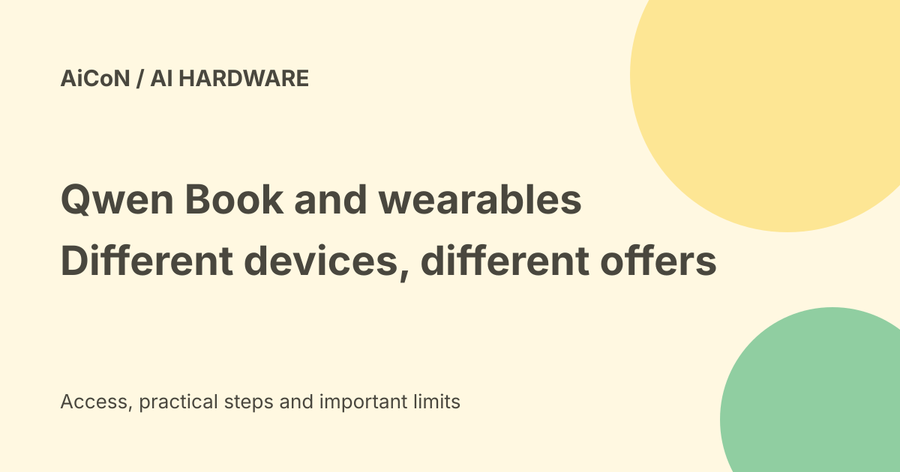

Qwen Book and AI wearables: launch details, India availability and privacy
Alibaba unveiled Qwen Book and a group of Qwen-powered wearables at the 2026 Apsara Conference. These are different products with different availability. A computer demonstration does not mean that every device is on sale in India, and a paid recording device is not a free AI app.

What is Qwen Book?
Alibaba describes Qwen Book as an agentic computer powered by Qwen Desktop OS. It combines Qwen models, applications and cloud services in one environment.
An agentic computer is intended to do tasks through tools, rather than only answer in a chat window. The company calls its approach OS as Harness. In plain words, the operating system supplies the agent with task context, software controls and a place to run.
What the presentation example shows
In Alibaba's example, a user speaks through a stylus while editing a presentation. The computer retrieves a cloud file, finds the slide and calls tools to make edits. The user can review and approve changes on a phone.
This is a vendor example, not an independent reliability test. It does not prove that arbitrary office files, Indian services or offline workflows will work without errors.
Why cloud access matters
The announced stack explicitly includes cloud services. Do not describe the whole computer as fully offline or all processing as local.
Before using workplace files, establish which documents leave the device, which service receives them and whether your employer permits that access. Review changes before sharing the resulting document.
Qwen Glasses N1 and N1 Pro
The company announced the glasses in China. The N1 series includes first-person HD capture through a fifty-megapixel sensor. The N1 Pro adds eye tracking for visual interaction, object recognition and iris-based payment.
The payment feature is a capability claim, not proof of support for Indian payment systems or every merchant. Biometric access and camera recording need separate checks.
Qwen Clip earbuds
Qwen Clip has a clip-on, open-ear design and integrates the Qwen assistant for face-to-face translation, notes and voice-driven tasks. Alibaba says it was co-engineered with Bose.
Translation quality, supported languages and the conditions for task execution should be tested for your use. A company description does not establish accurate Malayalam translation in every setting.
Wearable dates are not computer dates
Alibaba says wearable pre-orders opened on 22 September, with official sales scheduled for 13 October. As of this guide's 7 October check, that announced sales date is still ahead.
Do not apply the wearable date to Qwen Book or QwenNote A2. They are separate offers.
QwenNote A2
QwenNote A2 is a portable note-taking device that works with QwenWork. It turns conversations into text and context that a workplace agent can use for tasks such as follow-up meetings, to-dos and spreadsheets.
The announcement lists a sixty-seven-gram device, six microphones, pickup up to eight metres and built-in 4G. Those are vendor specifications, not measurements made for this guide.
Price and free-versus-paid verdict
QwenNote A2 was priced at RMB 1,199 and went on sale on 22 September through the QwenWork flagship store on Tmall. This is the announced China price, not an Indian delivered price.
The official English announcement does not establish an Indian Qwen Book checkout price, wearable price or a universal free consumer offer. Hardware, cloud use and workplace subscriptions can have separate terms. Check the final offer rather than treating an AI launch as free access.
India availability
No India sales channel, local warranty or delivery offer was established in the official announcement checked for this guide. That is a bounded source check, not a claim that no later release can happen.
For a buyer in Kerala, local support, account eligibility, network compatibility, language support and return terms matter as much as the demo. Do not pay an unrelated agent for a guaranteed imported allocation.
Recording and retained information
Alibaba says QwenNote audio is encrypted during transmission and deleted after transcription, while text and summaries remain.
Deleting audio is different from deleting the meeting's content. Ask the other participants before recording. Review text retention, access, deletion and account security before recording work or personal conversations.
A practical evaluation checklist
- Identify the exact device and its current regional offer.
- Check seller, warranty, total cost and return terms.
- Confirm language, network and required cloud accounts.
- Start with a non-sensitive test file or consented conversation.
- Inspect the transcript or edited file for mistakes.
- Keep review enabled before messages, payments or shared edits.
- Check what stays after deleting a recording.
No purchase, pre-order or account setup was made for this guide.
What changed since the original post?
We separate the wearable sales date from QwenNote's existing China sale, add the note-taking device's announced price and explain that cloud integration and retained transcripts still matter. India availability and practical reliability remain unverified.
Frequently asked questions
Is Qwen Book just a chatbot?
No. The announced design combines hardware, an operating system and tool-based agents.
Is QwenNote free?
No. The announcement gives a hardware price.
Is an India launch confirmed here?
No. Check a current regional offer before buying.
Sources: Alibaba official hardware announcement · Official Apsara press kit · TNGlobal launch reporting. Checked 7 October 2026.